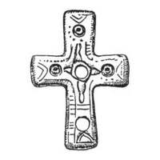

Catalog › CE-0264 · KOR2003-I.2.24
Valvă de encolpion fără balamale, cu ornament geometric și cercuri concentrice
sec. XI (1001–1100) · Țimleanskaia (Sarkel – Belaia Veja), regiunea Rostov, Rusia
single valve of a reliquary cross, aramă; c. XI (1001–1100); found at Țimleanskaia (Sarkel – Belaia Veja), regiunea Rostov, Rusia.


Identificare
- Categorie
- Valvă izolată
- Material
- Aramă
- Tehnică
- Turnare în relief; Gravare (incizie)
- Dimensiuni
- Î 50 × L 35 mm
Datare și atribuire
- Datare
- sec. XI (1001–1100)
- Centru
- Necunoscut
- Tipologie
- Korzukhina–Peskova 2003, tip I 2
Descoperire
- Localitate
- Țimleanskaia (Sarkel – Belaia Veja)
- Regiune
- regiunea Rostov
- Țară
- Rusia
- Context
- Necropolă / mormânt
Păstrare și referințe
- Bibliografie
- G. F. Korzukhina, A. A. Peskova, Древнерусские энколпионы. Нагрудные кресты-реликварии XI–XIII вв., Sankt-Petersburg, 2003 [Korzukhina–Peskova 2003], p. 58, cat. nr. I 2/24, reprodusă la Табл. 12 (planșe, p. 254). Bibliografie citată în sursă: Артамонова 1963, 97, рис. 46, 5.
- Figura
- Табл. 12
- Planșe
- Korzukhina–Peskova 2003, Табл. 12 (planșă fără paginație proprie în PDF; p. 254 tipărită)
- Observații
- Datare după Peskova: sec. XI. Circumstanțe: Săpături ale Expediției arheologice Volga–Don sub conducerea lui M. I. Artamonov; necropola de lângă zidul sud-vestic al fortăreței, mormântul nr. 5. Locul de păstrare nu este stabilit. Valvă (fără balamale) cu capete drepte, ușor lărgite, cu ornament geometric trasat cu linii adâncite; pe capătul de sus și pe cel lateral sunt marcate cercuri concentrice (posibil cu adâncituri pentru inserții). În centrul crucii și pe capătul de jos au existat probabil cercuri asemănătoare, dar mai târziu (probabil odată cu pierderea balamalelor) în locul lor au fost practicate găuri trecătoare rotunde. Sursa nu precizează dacă este valva de față sau de revers. Coordonate: nu sunt date în sursă.
Citare: Corpus Encolpiorum, CE-0264, Valvă de encolpion fără balamale, cu ornament geometric și cercuri concentrice, --root/piese/KOR2003-I.2.24/ (accesat 2026-10-20).